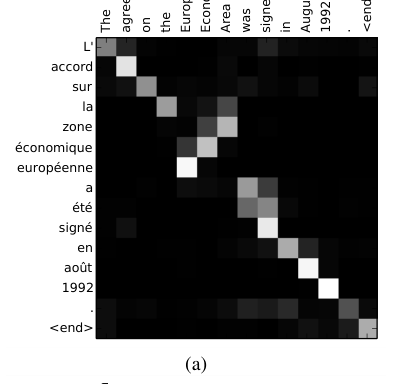

Bahdanau's 2014 translator chose which source words to read for each word it wrote
The model now cited as the origin of attention ran on WMT'14 English-French alone, and its authors credited a 2013 handwriting network for the idea.
Why this matters
When people say attention was invented in 2014, they mean one paper: Bahdanau, Cho, and Bengio's translation model, cited tens of thousands of times as the place the idea began. The story is mostly right and partly overstated. This lesson separates what the paper actually built from the origin story now told about it, and shows how narrow the evidence under that story was.
- 01
- Google packed a whole sentence into a single vector: the fixed-vector encoder-decoder this paper set out to improve on.
- 02
- LSTM learned to carry a value across 1,000 time steps: the recurrent cell these translators are built from.
- 03
- The paper credited with starting the LLM era never trained a language model: the 2017 Transformer that kept this idea and dropped the recurrence.
- 04
- An attention head is a weighted average that computes its own weights: how a single attention operation works, step by step.
One vector had to hold the whole sentence
In 2014 a neural translation model worked in two halves. An encoder read the source sentence one word at a time and compressed everything it had read into a single fixed-length vector, a list of numbers of a set size. A decoder then generated the translation from that one vector, producing the target sentence word by word with nothing else to consult. Bahdanau, Cho, and Bengio looked at that design and named its cost. A network, they wrote, "needs to be able to compress all the necessary information of a source sentence into a fixed-length vector," and they conjectured that this fixed-length vector was "a bottleneck" on how good the translation could get.1
The design they were improving on was recent, and partly their own. Cho and his coauthors had proposed the RNN encoder-decoder that same year: one recurrent network "encodes a sequence of symbols into a fixed-length vector representation, and the other decodes the representation into another sequence of symbols."2 Bahdanau was a coauthor on that earlier paper too, so the 2014 alignment work is a group revising a model it had just built, not attacking someone else's.
Reading the source again for each output word
The fix removed the single vector. Instead of squeezing the whole source into one representation, the encoder keeps one representation per source word. Bahdanau's model builds these with a bidirectional recurrent network that reads the sentence forward and backward and joins the two, so each word's representation carries what came before it and after it. The paper calls each of these an annotation.1
The change is in the decoder. The older model read the same fixed vector every time it produced a word. Bahdanau's decoder computes, for each target word it is about to produce, a fresh set of weights over all the source annotations, and reads a weighted sum of them. Those weights are the alignment: they say how much each source word matters to the word being generated right now. The weighted sum is the context vector, and the paper is explicit that here the probability of an output word "is conditioned on a distinct context vector c_i for each target word y_i," unlike the older approach that reused one vector throughout.1 The weights themselves come from a small feedforward network trained jointly with the rest of the model.1
The authors give this a name in passing. "Intuitively, this implements a mechanism of attention in the decoder," they write. "The decoder decides parts of the source sentence to pay attention to."1 The word appears in that one intuitive passage; the model itself is named RNNsearch, and the formal method is written in terms of alignment, annotations, and the context vector.
The alignment is legible in the weights themselves. In one of the paper's sample sentences, the English "The agreement on the European Economic Area was signed in August 1992" is translated into French, and the brightest weights run down the diagonal, each French word drawing mostly from its English counterpart. Where French reorders the phrase, the weights bend off the diagonal: to produce "zone économique européenne" the decoder reaches back across "European Economic Area" in reverse, lighting the cells that cross.1 Nothing in the setup told the model that French inverts that phrase. The reordering fell out of training.

The gain showed up on the long sentences
The evidence for all this was narrow. The models trained on one language pair, WMT'14 English to French, on 348 million words of text selected down from a combined pool of about 850 million.1 Both the source and target vocabularies were capped at the 30,000 most frequent words, and any rarer word became a single unknown token.1 Each recurrent network held 1,000 hidden units per direction, with 620-dimensional word embeddings.1 By later standards this is a small model on a single task.
On that task the alignment model beat the fixed-vector baseline cleanly. Scores are in BLEU, a translation metric from 0 to 100 that measures how much of the output's word sequences match a reference translation, so higher is better. The full comparison is one small table.
| Model | BLEU, all | BLEU, no unknown words |
|---|---|---|
| RNNencdec-30 | 13.93 | 24.19 |
| RNNsearch-30 | 21.50 | 31.44 |
| RNNencdec-50 | 17.82 | 26.71 |
| RNNsearch-50 | 26.75 | 34.16 |
| RNNsearch-50* | 28.45 | 36.15 |
| Moses | 33.30 | 35.63 |
Trained on sentences up to 50 words, RNNsearch scored 26.75 against RNNencdec's 17.82, and 34.16 against 26.71 once sentences with an unknown word were removed.1 The starred RNNsearch-50, trained until the development set stopped improving, reached 28.45, within reach of the 33.30 that Moses managed with its extra monolingual data.1
A single score hides where the gain came from. The paper's own picture of the bottleneck is a plot of BLEU against sentence length: the fixed-vector RNNencdec climbs, then falls as sentences grow past twenty or thirty words, while RNNsearch-50 stays flat out to length 50 and beyond.1 That curve, more than the headline BLEU, is the evidence for the conjecture, because it shows the baseline breaking down exactly where a single fixed vector would run out of room.
One contemporaneous result complicates the account. Sutskever, Vinyals, and Le trained a deep fixed-vector LSTM on the same English-French test set and reported 34.8 BLEU, above RNNsearch-50's 26.75. They wrote that "the LSTM did not have difficulty on long sentences," helped by feeding the source in reverse order.3 Those two numbers are not a head-to-head. Sutskever's system was deeper, reversed its inputs, and used an ensemble for its strongest scores, and the BLEU protocols differ, so 34.8 does not read against 26.75 as a like-for-like loss.3 What Bahdanau's paper actually establishes is narrower than a defeat of every fixed-vector model: its own RNNencdec baseline fell off with length, and alignment repaired that baseline.
A fix for one translator, not the Transformer
The paper is now cited roughly 30,000 times and is routinely named as the origin of attention.4 Two things in its own text sit awkwardly against that story.
The authors did not claim to have invented learned alignment. In their related-work section they point back a year: "A similar approach of aligning an output symbol with an input symbol was proposed recently by Graves (2013)," in a model that generated handwriting.1 Graves's network emitted the parameters of a soft window over the input characters as it wrote, so that it "dynamically determines an alignment between the text and the pen locations."5 A differentiable, learned alignment predated the translation paper, by one of the paper's own citations.
Nor did the 2014 work build what the origin story credits it with. It demonstrated soft alignment inside a recurrent translator, on one language pair. The Transformer came three years later, when Vaswani and coauthors kept the attention idea, cited this paper for it, and removed the recurrence: an architecture "based solely on attention mechanisms, dispensing with recurrence and convolutions."6 Self-attention, where a token attends to other positions in the same sequence, is defined in that 2017 paper, not in this one.6 Language-model pretraining, the later step that turned attention-based models into general systems, is nowhere in the 2014 work at all.
Calling this the paper that invented attention compresses that history. It introduced soft alignment in a translator and named it attention in a single passage. The Transformer, self-attention, and language-model pretraining were later, and by others.
The takeaway
The 2014 paper did something specific and did it well: it let a translator read a different slice of the source for every word it produced, and showed that this beat a fixed-vector model on long English-French sentences. The authors named the trick attention in one passage, and pointed to a 2013 handwriting model for the underlying idea. They did not build the Transformer, self-attention, or the pretrained language models that came after. So the paper is the origin of soft alignment in machine translation, not the origin of the whole architecture people picture when they hear the word today. The case behind the famous claim was one language pair and a single table of BLEU scores.
- 01
- Bahdanau, Cho, and Bengio, "Neural Machine Translation by Jointly Learning to Align and Translate": the paper itself; Section 3.1 is the attention passage.
- 02
- Vaswani et al., "Attention Is All You Need": the 2017 architecture that kept the idea and dropped the recurrence.
Sources
- arXiv · Bahdanau, Cho, and Bengio, "Neural Machine Translation by Jointly Learning to Align and Translate" (v7, 2016; ICLR 2015)
- arXiv · Cho et al., "Learning Phrase Representations using RNN Encoder–Decoder for Statistical Machine Translation" (EMNLP 2014)
- arXiv · Sutskever, Vinyals, and Le, "Sequence to Sequence Learning with Neural Networks" (2014)
- Semantic Scholar · citation record for "Neural Machine Translation by Jointly Learning to Align and Translate" (retrieved 2026-09-26)
- arXiv · Graves, "Generating Sequences With Recurrent Neural Networks" (2013)
- arXiv · Vaswani et al., "Attention Is All You Need" (2017)